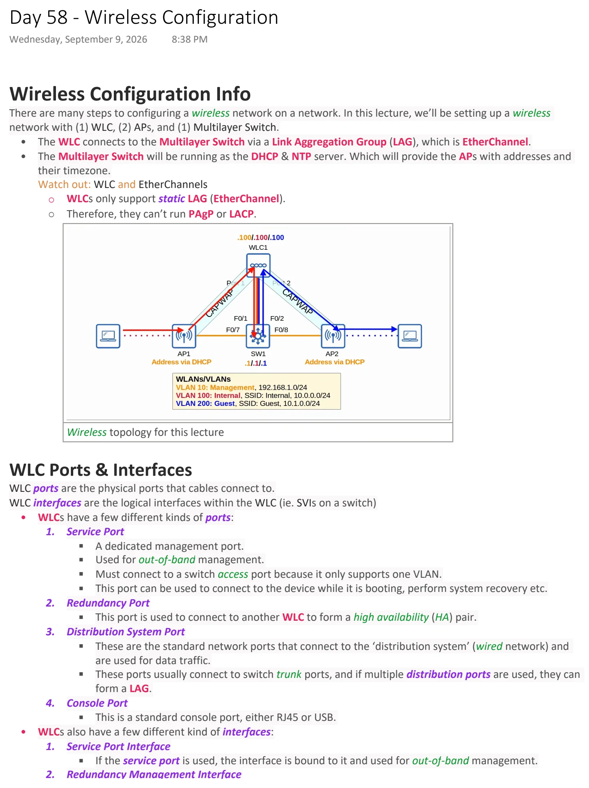
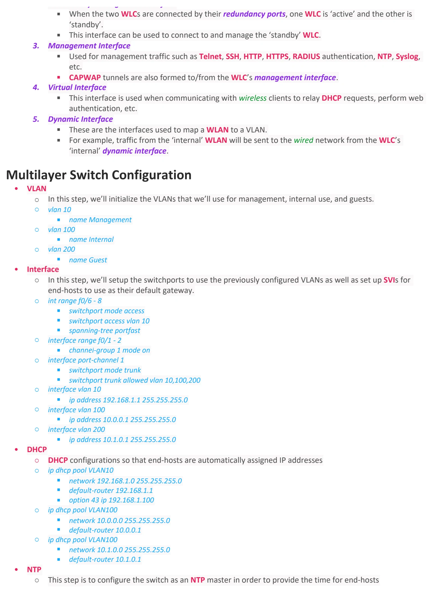
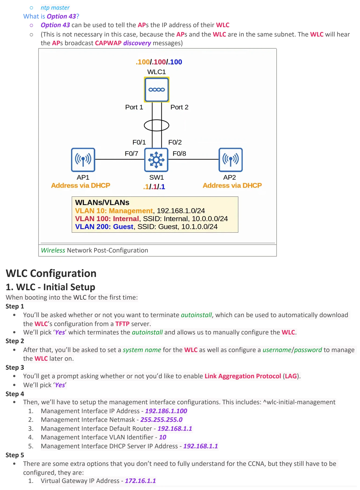
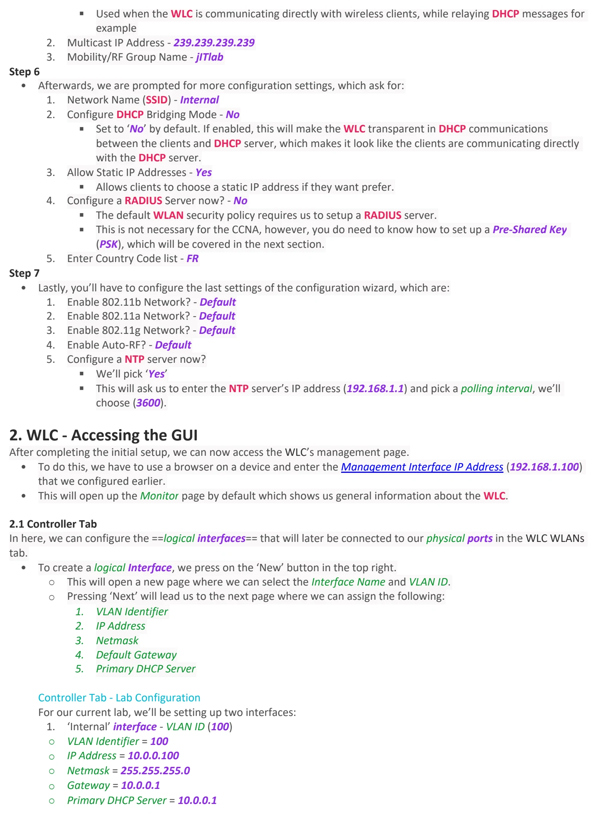
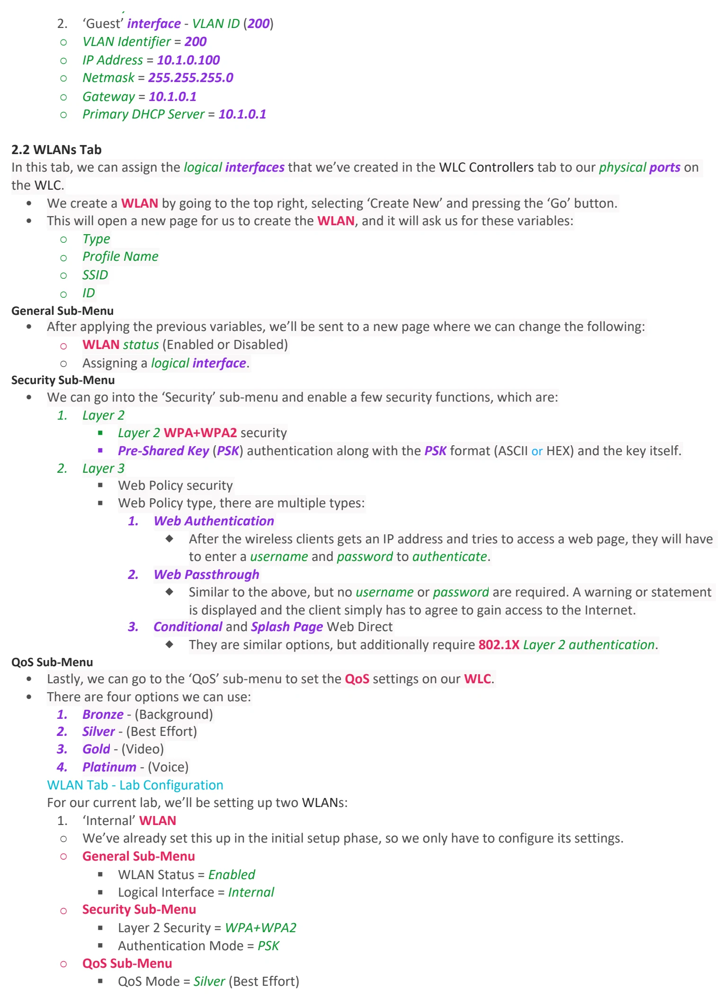
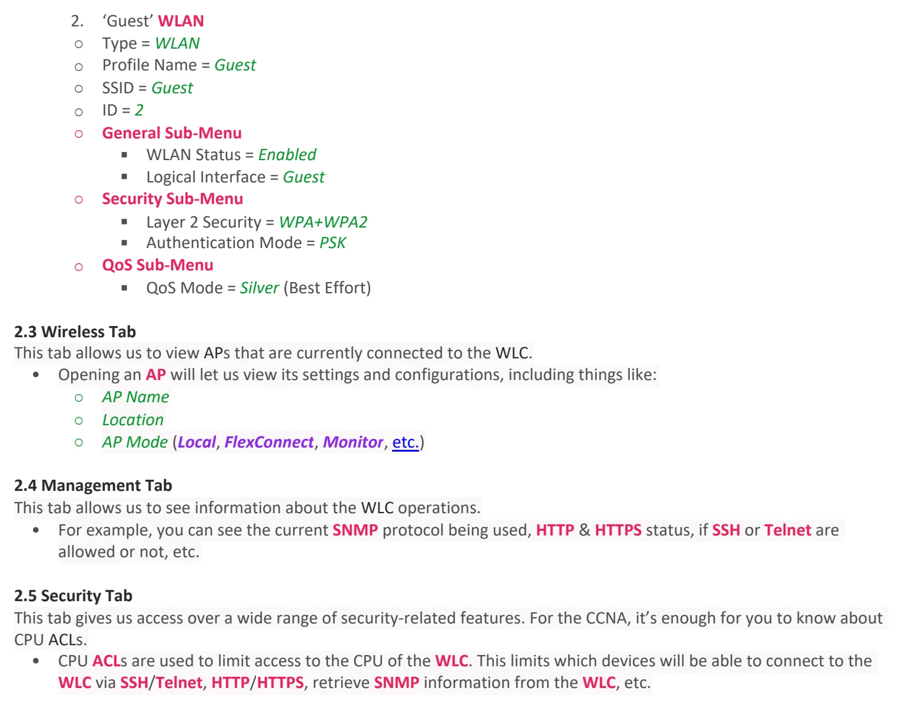

Day 58 / 63 · Architecture & wireless
Wireless Configuration
Study notes based primarily on Jeremy’s IT Lab CCNA learning videos. Credit to Jeremy’s IT Lab for the source lessons and diagrams.
Wireless Configuration
Download original PDF





Text view — Wireless Configuration
Extracted from the original export. Diagrams and some formatting appear in the notes above.
Day 58 - Wireless Configuration Wednesday, September 9, 2026 8:38 PM Wireless Configuration Info There are many steps to configuring a wireless network on a network. In this lecture, we’ll be setting up a wireless network with (1) WLC, (2) APs, and (1) Multilayer Switch. • The WLC connects to the Multilayer Switch via a Link Aggregation Group (LAG), which is EtherChannel. • The Multilayer Switch will be running as the DHCP & NTP server. Which will provide the APs with addresses and their timezone. Watch out: WLC and EtherChannels ○ WLCs only support static LAG (EtherChannel). ○ Therefore, they can’t run PAgP or LACP. Wireless topology for this lecture WLC Ports & Interfaces WLC ports are the physical ports that cables connect to. WLC interfaces are the logical interfaces within the WLC (ie. SVIs on a switch) • WLCs have a few different kinds of ports: 1. Service Port § A dedicated management port. § Used for out-of-band management. § Must connect to a switch access port because it only supports one VLAN. § This port can be used to connect to the device while it is booting, perform system recovery etc. 2. Redundancy Port § This port is used to connect to another WLC to form a high availability (HA) pair. 3. Distribution System Port § These are the standard network ports that connect to the ‘distribution system’ (wired network) and are used for data traffic. § These ports usually connect to switch trunk ports, and if multiple distribution ports are used, they can form a LAG. 4. Console Port § This is a standard console port, either RJ45 or USB. • WLCs also have a few different kind of interfaces: 1. Service Port Interface § If the service port is used, the interface is bound to it and used for out-of-band management. 2. Redundancy Management Interface § When the two WLCs are connected by their redundancy ports, one WLC is ‘active’ and the other is ‘standby’. § This interface can be used to connect to and manage the ‘standby’ WLC. 3. Management Interface § Used for management traffic such as Telnet, SSH, HTTP, HTTPS, RADIUS authentication, NTP, Syslog, etc. § CAPWAP tunnels are also formed to/from the WLC’s management interface. 4. Virtual Interface § This interface is used when communicating with wireless clients to relay DHCP requests, perform web authentication, etc. 5. Dynamic Interface § These are the interfaces used to map a WLAN to a VLAN. § For example, traffic from the ‘internal’ WLAN will be sent to the wired network from the WLC’s ‘internal’ dynamic interface. Multilayer Switch Configuration • VLAN ○ In this step, we’ll initialize the VLANs that we’ll use for management, internal use, and guests. ○ vlan 10 § name Management ○ vlan 100 § name Internal ○ vlan 200 § name Guest • Interface ○ In this step, we’ll setup the switchports to use the previously configured VLANs as well as set up SVIs for end-hosts to use as their default gateway. ○ int range f0/6 - 8 § switchport mode access § switchport access vlan 10 § spanning-tree portfast ○ interface range f0/1 - 2 § channel-group 1 mode on ○ interface port-channel 1 § switchport mode trunk § switchport trunk allowed vlan 10,100,200 ○ interface vlan 10 § ip address 192.168.1.1 255.255.255.0 ○ interface vlan 100 § ip address 10.0.0.1 255.255.255.0 ○ interface vlan 200 § ip address 10.1.0.1 255.255.255.0 • DHCP ○ DHCP configurations so that end-hosts are automatically assigned IP addresses ○ ip dhcp pool VLAN10 § network 192.168.1.0 255.255.255.0 § default-router 192.168.1.1 § option 43 ip 192.168.1.100 ○ ip dhcp pool VLAN100 § network 10.0.0.0 255.255.255.0 § default-router 10.0.0.1 ○ ip dhcp pool VLAN100 § network 10.1.0.0 255.255.255.0 § default-router 10.1.0.1 • NTP ○ This step is to configure the switch as an NTP master in order to provide the time for end-hosts ○ ntp master What is Option 43? ○ Option 43 can be used to tell the APs the IP address of their WLC ○ (This is not necessary in this case, because the APs and the WLC are in the same subnet. The WLC will hear the APs broadcast CAPWAP discovery messages) Wireless Network Post-Configuration WLC Configuration 1. WLC - Initial Setup When booting into the WLC for the first time: Step 1 • You’ll be asked whether or not you want to terminate autoinstall, which can be used to automatically download the WLC’s configuration from a TFTP server. • We’ll pick ‘Yes’ which terminates the autoinstall and allows us to manually configure the WLC. Step 2 • After that, you’ll be asked to set a system name for the WLC as well as configure a username/password to manage the WLC later on. Step 3 • You’ll get a prompt asking whether or not you’d like to enable Link Aggregation Protocol (LAG). • We’ll pick ‘Yes’ Step 4 • Then, we’ll have to setup the management interface configurations. This includes: ^wlc-initial-management 1. Management Interface IP Address - 192.186.1.100 2. Management Interface Netmask - 255.255.255.0 3. Management Interface Default Router - 192.168.1.1 4. Management Interface VLAN Identifier - 10 5. Management Interface DHCP Server IP Address - 192.168.1.1 Step 5 • There are some extra options that you don’t need to fully understand for the CCNA, but they still have to be configured, they are: 1. Virtual Gateway IP Address - 172.16.1.1 § Used when the WLC is communicating directly with wireless clients, while relaying DHCP messages for example 2. Multicast IP Address - 239.239.239.239 3. Mobility/RF Group Name - jITlab Step 6 • Afterwards, we are prompted for more configuration settings, which ask for: 1. Network Name (SSID) - Internal 2. Configure DHCP Bridging Mode - No § Set to ‘No’ by default. If enabled, this will make the WLC transparent in DHCP communications between the clients and DHCP server, which makes it look like the clients are communicating directly with the DHCP server. 3. Allow Static IP Addresses - Yes § Allows clients to choose a static IP address if they want prefer. 4. Configure a RADIUS Server now? - No § The default WLAN security policy requires us to setup a RADIUS server. § This is not necessary for the CCNA, however, you do need to know how to set up a Pre-Shared Key (PSK), which will be covered in the next section. 5. Enter Country Code list - FR Step 7 • Lastly, you’ll have to configure the last settings of the configuration wizard, which are: 1. Enable 802.11b Network? - Default 2. Enable 802.11a Network? - Default 3. Enable 802.11g Network? - Default 4. Enable Auto-RF? - Default 5. Configure a NTP server now? § We’ll pick ‘Yes’ § This will ask us to enter the NTP server’s IP address (192.168.1.1) and pick a polling interval, we’ll choose (3600). 2. WLC - Accessing the GUI After completing the initial setup, we can now access the WLC’s management page. • To do this, we have to use a browser on a device and enter the Management Interface IP Address (192.168.1.100) that we configured earlier. • This will open up the Monitor page by default which shows us general information about the WLC. 2.1 Controller Tab In here, we can configure the ==logical interfaces== that will later be connected to our physical ports in the WLC WLANs tab. • To create a logical Interface, we press on the ‘New’ button in the top right. ○ This will open a new page where we can select the Interface Name and VLAN ID. ○ Pressing ‘Next’ will lead us to the next page where we can assign the following: 1. VLAN Identifier 2. IP Address 3. Netmask 4. Default Gateway 5. Primary DHCP Server Controller Tab - Lab Configuration For our current lab, we’ll be setting up two interfaces: 1. ‘Internal’ interface - VLAN ID (100) ○ VLAN Identifier = 100 ○ IP Address = 10.0.0.100 ○ Netmask = 255.255.255.0 ○ Gateway = 10.0.0.1 ○ Primary DHCP Server = 10.0.0.1 2. ‘Guest’ interface - VLAN ID (200) ○ VLAN Identifier = 200 ○ IP Address = 10.1.0.100 ○ Netmask = 255.255.255.0 ○ Gateway = 10.1.0.1 ○ Primary DHCP Server = 10.1.0.1 2.2 WLANs Tab In this tab, we can assign the logical interfaces that we’ve created in the WLC Controllers tab to our physical ports on the WLC. • We create a WLAN by going to the top right, selecting ‘Create New’ and pressing the ‘Go’ button. • This will open a new page for us to create the WLAN, and it will ask us for these variables: ○ Type ○ Profile Name ○ SSID ○ ID General Sub-Menu • After applying the previous variables, we’ll be sent to a new page where we can change the following: ○ WLAN status (Enabled or Disabled) ○ Assigning a logical interface. Security Sub-Menu • We can go into the ‘Security’ sub-menu and enable a few security functions, which are: 1. Layer 2 § Layer 2 WPA+WPA2 security § Pre-Shared Key (PSK) authentication along with the PSK format (ASCII or HEX) and the key itself. 2. Layer 3 § Web Policy security § Web Policy type, there are multiple types: 1. Web Authentication ® After the wireless clients gets an IP address and tries to access a web page, they will have to enter a username and password to authenticate. 2. Web Passthrough ® Similar to the above, but no username or password are required. A warning or statement is displayed and the client simply has to agree to gain access to the Internet. 3. Conditional and Splash Page Web Direct ® They are similar options, but additionally require 802.1X Layer 2 authentication. QoS Sub-Menu • Lastly, we can go to the ‘QoS’ sub-menu to set the QoS settings on our WLC. • There are four options we can use: 1. Bronze - (Background) 2. Silver - (Best Effort) 3. Gold - (Video) 4. Platinum - (Voice) WLAN Tab - Lab Configuration For our current lab, we’ll be setting up two WLANs: 1. ‘Internal’ WLAN ○ We’ve already set this up in the initial setup phase, so we only have to configure its settings. ○ General Sub-Menu § WLAN Status = Enabled § Logical Interface = Internal ○ Security Sub-Menu § Layer 2 Security = WPA+WPA2 § Authentication Mode = PSK ○ QoS Sub-Menu § QoS Mode = Silver (Best Effort) 2. ‘Guest’ WLAN ○ Type = WLAN ○ Profile Name = Guest ○ SSID = Guest ○ ID = 2 ○ General Sub-Menu § WLAN Status = Enabled § Logical Interface = Guest ○ Security Sub-Menu § Layer 2 Security = WPA+WPA2 § Authentication Mode = PSK ○ QoS Sub-Menu § QoS Mode = Silver (Best Effort) 2.3 Wireless Tab This tab allows us to view APs that are currently connected to the WLC. • Opening an AP will let us view its settings and configurations, including things like: ○ AP Name ○ Location ○ AP Mode (Local, FlexConnect, Monitor, etc.) 2.4 Management Tab This tab allows us to see information about the WLC operations. • For example, you can see the current SNMP protocol being used, HTTP & HTTPS status, if SSH or Telnet are allowed or not, etc. 2.5 Security Tab This tab gives us access over a wide range of security-related features. For the CCNA, it’s enough for you to know about CPU ACLs. • CPU ACLs are used to limit access to the CPU of the WLC. This limits which devices will be able to connect to the WLC via SSH/Telnet, HTTP/HTTPS, retrieve SNMP information from the WLC, etc. Day 58 - Wireless Configuration Wednesday, September 9, 2026 8:38 PM Wireless Configuration Info There are many steps to configuring a wireless network on a network. In this lecture, we’ll be setting up a wireless network with (1) WLC, (2) APs, and (1) Multilayer Switch. • The WLC connects to the Multilayer Switch via a Link Aggregation Group (LAG), which is EtherChannel. • The Multilayer Switch will be running as the DHCP & NTP server. Which will provide the APs with addresses and their timezone. Watch out: WLC and EtherChannels ○ WLCs only support static LAG (EtherChannel). ○ Therefore, they can’t run PAgP or LACP. Wireless topology for this lecture WLC Ports & Interfaces WLC ports are the physical ports that cables connect to. WLC interfaces are the logical interfaces within the WLC (ie. SVIs on a switch) • WLCs have a few different kinds of ports: 1. Service Port § A dedicated management port. § Used for out-of-band management. § Must connect to a switch access port because it only supports one VLAN. § This port can be used to connect to the device while it is booting, perform system recovery etc. 2. Redundancy Port § This port is used to connect to another WLC to form a high availability (HA) pair. 3. Distribution System Port § These are the standard network ports that connect to the ‘distribution system’ (wired network) and are used for data traffic. § These ports usually connect to switch trunk ports, and if multiple distribution ports are used, they can form a LAG. 4. Console Port § This is a standard console port, either RJ45 or USB. • WLCs also have a few different kind of interfaces: 1. Service Port Interface § If the service port is used, the interface is bound to it and used for out-of-band management. 2. Redundancy Management Interface § When the two WLCs are connected by their redundancy ports, one WLC is ‘active’ and the other is ‘standby’. § This interface can be used to connect to and manage the ‘standby’ WLC. 3. Management Interface § Used for management traffic such as Telnet, SSH, HTTP, HTTPS, RADIUS authentication, NTP, Syslog, etc. § CAPWAP tunnels are also formed to/from the WLC’s management interface. 4. Virtual Interface § This interface is used when communicating with wireless clients to relay DHCP requests, perform web authentication, etc. 5. Dynamic Interface § These are the interfaces used to map a WLAN to a VLAN. § For example, traffic from the ‘internal’ WLAN will be sent to the wired network from the WLC’s ‘internal’ dynamic interface. Multilayer Switch Configuration • VLAN ○ In this step, we’ll initialize the VLANs that we’ll use for management, internal use, and guests. ○ vlan 10 § name Management ○ vlan 100 § name Internal ○ vlan 200 § name Guest • Interface ○ In this step, we’ll setup the switchports to use the previously configured VLANs as well as set up SVIs for end-hosts to use as their default gateway. ○ int range f0/6 - 8 § switchport mode access § switchport access vlan 10 § spanning-tree portfast ○ interface range f0/1 - 2 § channel-group 1 mode on ○ interface port-channel 1 § switchport mode trunk § switchport trunk allowed vlan 10,100,200 ○ interface vlan 10 § ip address 192.168.1.1 255.255.255.0 ○ interface vlan 100 § ip address 10.0.0.1 255.255.255.0 ○ interface vlan 200 § ip address 10.1.0.1 255.255.255.0 • DHCP ○ DHCP configurations so that end-hosts are automatically assigned IP addresses ○ ip dhcp pool VLAN10 § network 192.168.1.0 255.255.255.0 § default-router 192.168.1.1 § option 43 ip 192.168.1.100 ○ ip dhcp pool VLAN100 § network 10.0.0.0 255.255.255.0 § default-router 10.0.0.1 ○ ip dhcp pool VLAN100 § network 10.1.0.0 255.255.255.0 § default-router 10.1.0.1 • NTP ○ This step is to configure the switch as an NTP master in order to provide the time for end-hosts ○ ntp master What is Option 43? ○ Option 43 can be used to tell the APs the IP address of their WLC ○ (This is not necessary in this case, because the APs and the WLC are in the same subnet. The WLC will hear the APs broadcast CAPWAP discovery messages) Wireless Network Post-Configuration WLC Configuration 1. WLC - Initial Setup When booting into the WLC for the first time: Step 1 • You’ll be asked whether or not you want to terminate autoinstall, which can be used to automatically download the WLC’s configuration from a TFTP server. • We’ll pick ‘Yes’ which terminates the autoinstall and allows us to manually configure the WLC. Step 2 • After that, you’ll be asked to set a system name for the WLC as well as configure a username/password to manage the WLC later on. Step 3 • You’ll get a prompt asking whether or not you’d like to enable Link Aggregation Protocol (LAG). • We’ll pick ‘Yes’ Step 4 • Then, we’ll have to setup the management interface configurations. This includes: ^wlc-initial-management 1. Management Interface IP Address - 192.186.1.100 2. Management Interface Netmask - 255.255.255.0 3. Management Interface Default Router - 192.168.1.1 4. Management Interface VLAN Identifier - 10 5. Management Interface DHCP Server IP Address - 192.168.1.1 Step 5 • There are some extra options that you don’t need to fully understand for the CCNA, but they still have to be configured, they are: 1. Virtual Gateway IP Address - 172.16.1.1 § Used when the WLC is communicating directly with wireless clients, while relaying DHCP messages for example 2. Multicast IP Address - 239.239.239.239 3. Mobility/RF Group Name - jITlab Step 6 • Afterwards, we are prompted for more configuration settings, which ask for: 1. Network Name (SSID) - Internal 2. Configure DHCP Bridging Mode - No § Set to ‘No’ by default. If enabled, this will make the WLC transparent in DHCP communications between the clients and DHCP server, which makes it look like the clients are communicating directly with the DHCP server. 3. Allow Static IP Addresses - Yes § Allows clients to choose a static IP address if they want prefer. 4. Configure a RADIUS Server now? - No § The default WLAN security policy requires us to setup a RADIUS server. § This is not necessary for the CCNA, however, you do need to know how to set up a Pre-Shared Key (PSK), which will be covered in the next section. 5. Enter Country Code list - FR Step 7 • Lastly, you’ll have to configure the last settings of the configuration wizard, which are: 1. Enable 802.11b Network? - Default 2. Enable 802.11a Network? - Default 3. Enable 802.11g Network? - Default 4. Enable Auto-RF? - Default 5. Configure a NTP server now? § We’ll pick ‘Yes’ § This will ask us to enter the NTP server’s IP address (192.168.1.1) and pick a polling interval, we’ll choose (3600). 2. WLC - Accessing the GUI After completing the initial setup, we can now access the WLC’s management page. • To do this, we have to use a browser on a device and enter the Management Interface IP Address (192.168.1.100) that we configured earlier. • This will open up the Monitor page by default which shows us general information about the WLC. 2.1 Controller Tab In here, we can configure the ==logical interfaces== that will later be connected to our physical ports in the WLC WLANs tab. • To create a logical Interface, we press on the ‘New’ button in the top right. ○ This will open a new page where we can select the Interface Name and VLAN ID. ○ Pressing ‘Next’ will lead us to the next page where we can assign the following: 1. VLAN Identifier 2. IP Address 3. Netmask 4. Default Gateway 5. Primary DHCP Server Controller Tab - Lab Configuration For our current lab, we’ll be setting up two interfaces: 1. ‘Internal’ interface - VLAN ID (100) ○ VLAN Identifier = 100 ○ IP Address = 10.0.0.100 ○ Netmask = 255.255.255.0 ○ Gateway = 10.0.0.1 ○ Primary DHCP Server = 10.0.0.1 2. ‘Guest’ interface - VLAN ID (200) ○ VLAN Identifier = 200 ○ IP Address = 10.1.0.100 ○ Netmask = 255.255.255.0 ○ Gateway = 10.1.0.1 ○ Primary DHCP Server = 10.1.0.1 2.2 WLANs Tab In this tab, we can assign the logical interfaces that we’ve created in the WLC Controllers tab to our physical ports on the WLC. • We create a WLAN by going to the top right, selecting ‘Create New’ and pressing the ‘Go’ button. • This will open a new page for us to create the WLAN, and it will ask us for these variables: ○ Type ○ Profile Name ○ SSID ○ ID General Sub-Menu • After applying the previous variables, we’ll be sent to a new page where we can change the following: ○ WLAN status (Enabled or Disabled) ○ Assigning a logical interface. Security Sub-Menu • We can go into the ‘Security’ sub-menu and enable a few security functions, which are: 1. Layer 2 § Layer 2 WPA+WPA2 security § Pre-Shared Key (PSK) authentication along with the PSK format (ASCII or HEX) and the key itself. 2. Layer 3 § Web Policy security § Web Policy type, there are multiple types: 1. Web Authentication ® After the wireless clients gets an IP address and tries to access a web page, they will have to enter a username and password to authenticate. 2. Web Passthrough ® Similar to the above, but no username or password are required. A warning or statement is displayed and the client simply has to agree to gain access to the Internet. 3. Conditional and Splash Page Web Direct ® They are similar options, but additionally require 802.1X Layer 2 authentication. QoS Sub-Menu • Lastly, we can go to the ‘QoS’ sub-menu to set the QoS settings on our WLC. • There are four options we can use: 1. Bronze - (Background) 2. Silver - (Best Effort) 3. Gold - (Video) 4. Platinum - (Voice) WLAN Tab - Lab Configuration For our current lab, we’ll be setting up two WLANs: 1. ‘Internal’ WLAN ○ We’ve already set this up in the initial setup phase, so we only have to configure its settings. ○ General Sub-Menu § WLAN Status = Enabled § Logical Interface = Internal ○ Security Sub-Menu § Layer 2 Security = WPA+WPA2 § Authentication Mode = PSK ○ QoS Sub-Menu § QoS Mode = Silver (Best Effort) 2. ‘Guest’ WLAN ○ Type = WLAN ○ Profile Name = Guest ○ SSID = Guest ○ ID = 2 ○ General Sub-Menu § WLAN Status = Enabled § Logical Interface = Guest ○ Security Sub-Menu § Layer 2 Security = WPA+WPA2 § Authentication Mode = PSK ○ QoS Sub-Menu § QoS Mode = Silver (Best Effort) 2.3 Wireless Tab This tab allows us to view APs that are currently connected to the WLC. • Opening an AP will let us view its settings and configurations, including things like: ○ AP Name ○ Location ○ AP Mode (Local, FlexConnect, Monitor, etc.) 2.4 Management Tab This tab allows us to see information about the WLC operations. • For example, you can see the current SNMP protocol being used, HTTP & HTTPS status, if SSH or Telnet are allowed or not, etc. 2.5 Security Tab This tab gives us access over a wide range of security-related features. For the CCNA, it’s enough for you to know about CPU ACLs. • CPU ACLs are used to limit access to the CPU of the WLC. This limits which devices will be able to connect to the WLC via SSH/Telnet, HTTP/HTTPS, retrieve SNMP information from the WLC, etc. Day 58 - Wireless Configuration Wednesday, September 9, 2026 8:38 PM Wireless Configuration Info There are many steps to configuring a wireless network on a network. In this lecture, we’ll be setting up a wireless network with (1) WLC, (2) APs, and (1) Multilayer Switch. • The WLC connects to the Multilayer Switch via a Link Aggregation Group (LAG), which is EtherChannel. • The Multilayer Switch will be running as the DHCP & NTP server. Which will provide the APs with addresses and their timezone. Watch out: WLC and EtherChannels ○ WLCs only support static LAG (EtherChannel). ○ Therefore, they can’t run PAgP or LACP. Wireless topology for this lecture WLC Ports & Interfaces WLC ports are the physical ports that cables connect to. WLC interfaces are the logical interfaces within the WLC (ie. SVIs on a switch) • WLCs have a few different kinds of ports: 1. Service Port § A dedicated management port. § Used for out-of-band management. § Must connect to a switch access port because it only supports one VLAN. § This port can be used to connect to the device while it is booting, perform system recovery etc. 2. Redundancy Port § This port is used to connect to another WLC to form a high availability (HA) pair. 3. Distribution System Port § These are the standard network ports that connect to the ‘distribution system’ (wired network) and are used for data traffic. § These ports usually connect to switch trunk ports, and if multiple distribution ports are used, they can form a LAG. 4. Console Port § This is a standard console port, either RJ45 or USB. • WLCs also have a few different kind of interfaces: 1. Service Port Interface § If the service port is used, the interface is bound to it and used for out-of-band management. 2. Redundancy Management Interface § When the two WLCs are connected by their redundancy ports, one WLC is ‘active’ and the other is ‘standby’. § This interface can be used to connect to and manage the ‘standby’ WLC. 3. Management Interface § Used for management traffic such as Telnet, SSH, HTTP, HTTPS, RADIUS authentication, NTP, Syslog, etc. § CAPWAP tunnels are also formed to/from the WLC’s management interface. 4. Virtual Interface § This interface is used when communicating with wireless clients to relay DHCP requests, perform web authentication, etc. 5. Dynamic Interface § These are the interfaces used to map a WLAN to a VLAN. § For example, traffic from the ‘internal’ WLAN will be sent to the wired network from the WLC’s ‘internal’ dynamic interface. Multilayer Switch Configuration • VLAN ○ In this step, we’ll initialize the VLANs that we’ll use for management, internal use, and guests. ○ vlan 10 § name Management ○ vlan 100 § name Internal ○ vlan 200 § name Guest • Interface ○ In this step, we’ll setup the switchports to use the previously configured VLANs as well as set up SVIs for end-hosts to use as their default gateway. ○ int range f0/6 - 8 § switchport mode access § switchport access vlan 10 § spanning-tree portfast ○ interface range f0/1 - 2 § channel-group 1 mode on ○ interface port-channel 1 § switchport mode trunk § switchport trunk allowed vlan 10,100,200 ○ interface vlan 10 § ip address 192.168.1.1 255.255.255.0 ○ interface vlan 100 § ip address 10.0.0.1 255.255.255.0 ○ interface vlan 200 § ip address 10.1.0.1 255.255.255.0 • DHCP ○ DHCP configurations so that end-hosts are automatically assigned IP addresses ○ ip dhcp pool VLAN10 § network 192.168.1.0 255.255.255.0 § default-router 192.168.1.1 § option 43 ip 192.168.1.100 ○ ip dhcp pool VLAN100 § network 10.0.0.0 255.255.255.0 § default-router 10.0.0.1 ○ ip dhcp pool VLAN100 § network 10.1.0.0 255.255.255.0 § default-router 10.1.0.1 • NTP ○ This step is to configure the switch as an NTP master in order to provide the time for end-hosts ○ ntp master What is Option 43? ○ Option 43 can be used to tell the APs the IP address of their WLC ○ (This is not necessary in this case, because the APs and the WLC are in the same subnet. The WLC will hear the APs broadcast CAPWAP discovery messages) Wireless Network Post-Configuration WLC Configuration 1. WLC - Initial Setup When booting into the WLC for the first time: Step 1 • You’ll be asked whether or not you want to terminate autoinstall, which can be used to automatically download the WLC’s configuration from a TFTP server. • We’ll pick ‘Yes’ which terminates the autoinstall and allows us to manually configure the WLC. Step 2 • After that, you’ll be asked to set a system name for the WLC as well as configure a username/password to manage the WLC later on. Step 3 • You’ll get a prompt asking whether or not you’d like to enable Link Aggregation Protocol (LAG). • We’ll pick ‘Yes’ Step 4 • Then, we’ll have to setup the management interface configurations. This includes: ^wlc-initial-management 1. Management Interface IP Address - 192.186.1.100 2. Management Interface Netmask - 255.255.255.0 3. Management Interface Default Router - 192.168.1.1 4. Management Interface VLAN Identifier - 10 5. Management Interface DHCP Server IP Address - 192.168.1.1 Step 5 • There are some extra options that you don’t need to fully understand for the CCNA, but they still have to be configured, they are: 1. Virtual Gateway IP Address - 172.16.1.1 § Used when the WLC is communicating directly with wireless clients, while relaying DHCP messages for example 2. Multicast IP Address - 239.239.239.239 3. Mobility/RF Group Name - jITlab Step 6 • Afterwards, we are prompted for more configuration settings, which ask for: 1. Network Name (SSID) - Internal 2. Configure DHCP Bridging Mode - No § Set to ‘No’ by default. If enabled, this will make the WLC transparent in DHCP communications between the clients and DHCP server, which makes it look like the clients are communicating directly with the DHCP server. 3. Allow Static IP Addresses - Yes § Allows clients to choose a static IP address if they want prefer. 4. Configure a RADIUS Server now? - No § The default WLAN security policy requires us to setup a RADIUS server. § This is not necessary for the CCNA, however, you do need to know how to set up a Pre-Shared Key (PSK), which will be covered in the next section. 5. Enter Country Code list - FR Step 7 • Lastly, you’ll have to configure the last settings of the configuration wizard, which are: 1. Enable 802.11b Network? - Default 2. Enable 802.11a Network? - Default 3. Enable 802.11g Network? - Default 4. Enable Auto-RF? - Default 5. Configure a NTP server now? § We’ll pick ‘Yes’ § This will ask us to enter the NTP server’s IP address (192.168.1.1) and pick a polling interval, we’ll choose (3600). 2. WLC - Accessing the GUI After completing the initial setup, we can now access the WLC’s management page. • To do this, we have to use a browser on a device and enter the Management Interface IP Address (192.168.1.100) that we configured earlier. • This will open up the Monitor page by default which shows us general information about the WLC. 2.1 Controller Tab In here, we can configure the ==logical interfaces== that will later be connected to our physical ports in the WLC WLANs tab. • To create a logical Interface, we press on the ‘New’ button in the top right. ○ This will open a new page where we can select the Interface Name and VLAN ID. ○ Pressing ‘Next’ will lead us to the next page where we can assign the following: 1. VLAN Identifier 2. IP Address 3. Netmask 4. Default Gateway 5. Primary DHCP Server Controller Tab - Lab Configuration For our current lab, we’ll be setting up two interfaces: 1. ‘Internal’ interface - VLAN ID (100) ○ VLAN Identifier = 100 ○ IP Address = 10.0.0.100 ○ Netmask = 255.255.255.0 ○ Gateway = 10.0.0.1 ○ Primary DHCP Server = 10.0.0.1 2. ‘Guest’ interface - VLAN ID (200) ○ VLAN Identifier = 200 ○ IP Address = 10.1.0.100 ○ Netmask = 255.255.255.0 ○ Gateway = 10.1.0.1 ○ Primary DHCP Server = 10.1.0.1 2.2 WLANs Tab In this tab, we can assign the logical interfaces that we’ve created in the WLC Controllers tab to our physical ports on the WLC. • We create a WLAN by going to the top right, selecting ‘Create New’ and pressing the ‘Go’ button. • This will open a new page for us to create the WLAN, and it will ask us for these variables: ○ Type ○ Profile Name ○ SSID ○ ID General Sub-Menu • After applying the previous variables, we’ll be sent to a new page where we can change the following: ○ WLAN status (Enabled or Disabled) ○ Assigning a logical interface. Security Sub-Menu • We can go into the ‘Security’ sub-menu and enable a few security functions, which are: 1. Layer 2 § Layer 2 WPA+WPA2 security § Pre-Shared Key (PSK) authentication along with the PSK format (ASCII or HEX) and the key itself. 2. Layer 3 § Web Policy security § Web Policy type, there are multiple types: 1. Web Authentication ® After the wireless clients gets an IP address and tries to access a web page, they will have to enter a username and password to authenticate. 2. Web Passthrough ® Similar to the above, but no username or password are required. A warning or statement is displayed and the client simply has to agree to gain access to the Internet. 3. Conditional and Splash Page Web Direct ® They are similar options, but additionally require 802.1X Layer 2 authentication. QoS Sub-Menu • Lastly, we can go to the ‘QoS’ sub-menu to set the QoS settings on our WLC. • There are four options we can use: 1. Bronze - (Background) 2. Silver - (Best Effort) 3. Gold - (Video) 4. Platinum - (Voice) WLAN Tab - Lab Configuration For our current lab, we’ll be setting up two WLANs: 1. ‘Internal’ WLAN ○ We’ve already set this up in the initial setup phase, so we only have to configure its settings. ○ General Sub-Menu § WLAN Status = Enabled § Logical Interface = Internal ○ Security Sub-Menu § Layer 2 Security = WPA+WPA2 § Authentication Mode = PSK ○ QoS Sub-Menu § QoS Mode = Silver (Best Effort) 2. ‘Guest’ WLAN ○ Type = WLAN ○ Profile Name = Guest ○ SSID = Guest ○ ID = 2 ○ General Sub-Menu § WLAN Status = Enabled § Logical Interface = Guest ○ Security Sub-Menu § Layer 2 Security = WPA+WPA2 § Authentication Mode = PSK ○ QoS Sub-Menu § QoS Mode = Silver (Best Effort) 2.3 Wireless Tab This tab allows us to view APs that are currently connected to the WLC. • Opening an AP will let us view its settings and configurations, including things like: ○ AP Name ○ Location ○ AP Mode (Local, FlexConnect, Monitor, etc.) 2.4 Management Tab This tab allows us to see information about the WLC operations. • For example, you can see the current SNMP protocol being used, HTTP & HTTPS status, if SSH or Telnet are allowed or not, etc. 2.5 Security Tab This tab gives us access over a wide range of security-related features. For the CCNA, it’s enough for you to know about CPU ACLs. • CPU ACLs are used to limit access to the CPU of the WLC. This limits which devices will be able to connect to the WLC via SSH/Telnet, HTTP/HTTPS, retrieve SNMP information from the WLC, etc. Day 58 - Wireless Configuration Wednesday, September 9, 2026 8:38 PM Wireless Configuration Info There are many steps to configuring a wireless network on a network. In this lecture, we’ll be setting up a wireless network with (1) WLC, (2) APs, and (1) Multilayer Switch. • The WLC connects to the Multilayer Switch via a Link Aggregation Group (LAG), which is EtherChannel. • The Multilayer Switch will be running as the DHCP & NTP server. Which will provide the APs with addresses and their timezone. Watch out: WLC and EtherChannels ○ WLCs only support static LAG (EtherChannel). ○ Therefore, they can’t run PAgP or LACP. Wireless topology for this lecture WLC Ports & Interfaces WLC ports are the physical ports that cables connect to. WLC interfaces are the logical interfaces within the WLC (ie. SVIs on a switch) • WLCs have a few different kinds of ports: 1. Service Port § A dedicated management port. § Used for out-of-band management. § Must connect to a switch access port because it only supports one VLAN. § This port can be used to connect to the device while it is booting, perform system recovery etc. 2. Redundancy Port § This port is used to connect to another WLC to form a high availability (HA) pair. 3. Distribution System Port § These are the standard network ports that connect to the ‘distribution system’ (wired network) and are used for data traffic. § These ports usually connect to switch trunk ports, and if multiple distribution ports are used, they can form a LAG. 4. Console Port § This is a standard console port, either RJ45 or USB. • WLCs also have a few different kind of interfaces: 1. Service Port Interface § If the service port is used, the interface is bound to it and used for out-of-band management. 2. Redundancy Management Interface § When the two WLCs are connected by their redundancy ports, one WLC is ‘active’ and the other is ‘standby’. § This interface can be used to connect to and manage the ‘standby’ WLC. 3. Management Interface § Used for management traffic such as Telnet, SSH, HTTP, HTTPS, RADIUS authentication, NTP, Syslog, etc. § CAPWAP tunnels are also formed to/from the WLC’s management interface. 4. Virtual Interface § This interface is used when communicating with wireless clients to relay DHCP requests, perform web authentication, etc. 5. Dynamic Interface § These are the interfaces used to map a WLAN to a VLAN. § For example, traffic from the ‘internal’ WLAN will be sent to the wired network from the WLC’s ‘internal’ dynamic interface. Multilayer Switch Configuration • VLAN ○ In this step, we’ll initialize the VLANs that we’ll use for management, internal use, and guests. ○ vlan 10 § name Management ○ vlan 100 § name Internal ○ vlan 200 § name Guest • Interface ○ In this step, we’ll setup the switchports to use the previously configured VLANs as well as set up SVIs for end-hosts to use as their default gateway. ○ int range f0/6 - 8 § switchport mode access § switchport access vlan 10 § spanning-tree portfast ○ interface range f0/1 - 2 § channel-group 1 mode on ○ interface port-channel 1 § switchport mode trunk § switchport trunk allowed vlan 10,100,200 ○ interface vlan 10 § ip address 192.168.1.1 255.255.255.0 ○ interface vlan 100 § ip address 10.0.0.1 255.255.255.0 ○ interface vlan 200 § ip address 10.1.0.1 255.255.255.0 • DHCP ○ DHCP configurations so that end-hosts are automatically assigned IP addresses ○ ip dhcp pool VLAN10 § network 192.168.1.0 255.255.255.0 § default-router 192.168.1.1 § option 43 ip 192.168.1.100 ○ ip dhcp pool VLAN100 § network 10.0.0.0 255.255.255.0 § default-router 10.0.0.1 ○ ip dhcp pool VLAN100 § network 10.1.0.0 255.255.255.0 § default-router 10.1.0.1 • NTP ○ This step is to configure the switch as an NTP master in order to provide the time for end-hosts ○ ntp master What is Option 43? ○ Option 43 can be used to tell the APs the IP address of their WLC ○ (This is not necessary in this case, because the APs and the WLC are in the same subnet. The WLC will hear the APs broadcast CAPWAP discovery messages) Wireless Network Post-Configuration WLC Configuration 1. WLC - Initial Setup When booting into the WLC for the first time: Step 1 • You’ll be asked whether or not you want to terminate autoinstall, which can be used to automatically download the WLC’s configuration from a TFTP server. • We’ll pick ‘Yes’ which terminates the autoinstall and allows us to manually configure the WLC. Step 2 • After that, you’ll be asked to set a system name for the WLC as well as configure a username/password to manage the WLC later on. Step 3 • You’ll get a prompt asking whether or not you’d like to enable Link Aggregation Protocol (LAG). • We’ll pick ‘Yes’ Step 4 • Then, we’ll have to setup the management interface configurations. This includes: ^wlc-initial-management 1. Management Interface IP Address - 192.186.1.100 2. Management Interface Netmask - 255.255.255.0 3. Management Interface Default Router - 192.168.1.1 4. Management Interface VLAN Identifier - 10 5. Management Interface DHCP Server IP Address - 192.168.1.1 Step 5 • There are some extra options that you don’t need to fully understand for the CCNA, but they still have to be configured, they are: 1. Virtual Gateway IP Address - 172.16.1.1 § Used when the WLC is communicating directly with wireless clients, while relaying DHCP messages for example 2. Multicast IP Address - 239.239.239.239 3. Mobility/RF Group Name - jITlab Step 6 • Afterwards, we are prompted for more configuration settings, which ask for: 1. Network Name (SSID) - Internal 2. Configure DHCP Bridging Mode - No § Set to ‘No’ by default. If enabled, this will make the WLC transparent in DHCP communications between the clients and DHCP server, which makes it look like the clients are communicating directly with the DHCP server. 3. Allow Static IP Addresses - Yes § Allows clients to choose a static IP address if they want prefer. 4. Configure a RADIUS Server now? - No § The default WLAN security policy requires us to setup a RADIUS server. § This is not necessary for the CCNA, however, you do need to know how to set up a Pre-Shared Key (PSK), which will be covered in the next section. 5. Enter Country Code list - FR Step 7 • Lastly, you’ll have to configure the last settings of the configuration wizard, which are: 1. Enable 802.11b Network? - Default 2. Enable 802.11a Network? - Default 3. Enable 802.11g Network? - Default 4. Enable Auto-RF? - Default 5. Configure a NTP server now? § We’ll pick ‘Yes’ § This will ask us to enter the NTP server’s IP address (192.168.1.1) and pick a polling interval, we’ll choose (3600). 2. WLC - Accessing the GUI After completing the initial setup, we can now access the WLC’s management page. • To do this, we have to use a browser on a device and enter the Management Interface IP Address (192.168.1.100) that we configured earlier. • This will open up the Monitor page by default which shows us general information about the WLC. 2.1 Controller Tab In here, we can configure the ==logical interfaces== that will later be connected to our physical ports in the WLC WLANs tab. • To create a logical Interface, we press on the ‘New’ button in the top right. ○ This will open a new page where we can select the Interface Name and VLAN ID. ○ Pressing ‘Next’ will lead us to the next page where we can assign the following: 1. VLAN Identifier 2. IP Address 3. Netmask 4. Default Gateway 5. Primary DHCP Server Controller Tab - Lab Configuration For our current lab, we’ll be setting up two interfaces: 1. ‘Internal’ interface - VLAN ID (100) ○ VLAN Identifier = 100 ○ IP Address = 10.0.0.100 ○ Netmask = 255.255.255.0 ○ Gateway = 10.0.0.1 ○ Primary DHCP Server = 10.0.0.1 2. ‘Guest’ interface - VLAN ID (200) ○ VLAN Identifier = 200 ○ IP Address = 10.1.0.100 ○ Netmask = 255.255.255.0 ○ Gateway = 10.1.0.1 ○ Primary DHCP Server = 10.1.0.1 2.2 WLANs Tab In this tab, we can assign the logical interfaces that we’ve created in the WLC Controllers tab to our physical ports on the WLC. • We create a WLAN by going to the top right, selecting ‘Create New’ and pressing the ‘Go’ button. • This will open a new page for us to create the WLAN, and it will ask us for these variables: ○ Type ○ Profile Name ○ SSID ○ ID General Sub-Menu • After applying the previous variables, we’ll be sent to a new page where we can change the following: ○ WLAN status (Enabled or Disabled) ○ Assigning a logical interface. Security Sub-Menu • We can go into the ‘Security’ sub-menu and enable a few security functions, which are: 1. Layer 2 § Layer 2 WPA+WPA2 security § Pre-Shared Key (PSK) authentication along with the PSK format (ASCII or HEX) and the key itself. 2. Layer 3 § Web Policy security § Web Policy type, there are multiple types: 1. Web Authentication ® After the wireless clients gets an IP address and tries to access a web page, they will have to enter a username and password to authenticate. 2. Web Passthrough ® Similar to the above, but no username or password are required. A warning or statement is displayed and the client simply has to agree to gain access to the Internet. 3. Conditional and Splash Page Web Direct ® They are similar options, but additionally require 802.1X Layer 2 authentication. QoS Sub-Menu • Lastly, we can go to the ‘QoS’ sub-menu to set the QoS settings on our WLC. • There are four options we can use: 1. Bronze - (Background) 2. Silver - (Best Effort) 3. Gold - (Video) 4. Platinum - (Voice) WLAN Tab - Lab Configuration For our current lab, we’ll be setting up two WLANs: 1. ‘Internal’ WLAN ○ We’ve already set this up in the initial setup phase, so we only have to configure its settings. ○ General Sub-Menu § WLAN Status = Enabled § Logical Interface = Internal ○ Security Sub-Menu § Layer 2 Security = WPA+WPA2 § Authentication Mode = PSK ○ QoS Sub-Menu § QoS Mode = Silver (Best Effort) 2. ‘Guest’ WLAN ○ Type = WLAN ○ Profile Name = Guest ○ SSID = Guest ○ ID = 2 ○ General Sub-Menu § WLAN Status = Enabled § Logical Interface = Guest ○ Security Sub-Menu § Layer 2 Security = WPA+WPA2 § Authentication Mode = PSK ○ QoS Sub-Menu § QoS Mode = Silver (Best Effort) 2.3 Wireless Tab This tab allows us to view APs that are currently connected to the WLC. • Opening an AP will let us view its settings and configurations, including things like: ○ AP Name ○ Location ○ AP Mode (Local, FlexConnect, Monitor, etc.) 2.4 Management Tab This tab allows us to see information about the WLC operations. • For example, you can see the current SNMP protocol being used, HTTP & HTTPS status, if SSH or Telnet are allowed or not, etc. 2.5 Security Tab This tab gives us access over a wide range of security-related features. For the CCNA, it’s enough for you to know about CPU ACLs. • CPU ACLs are used to limit access to the CPU of the WLC. This limits which devices will be able to connect to the WLC via SSH/Telnet, HTTP/HTTPS, retrieve SNMP information from the WLC, etc. Day 58 - Wireless Configuration Wednesday, September 9, 2026 8:38 PM Wireless Configuration Info There are many steps to configuring a wireless network on a network. In this lecture, we’ll be setting up a wireless network with (1) WLC, (2) APs, and (1) Multilayer Switch. • The WLC connects to the Multilayer Switch via a Link Aggregation Group (LAG), which is EtherChannel. • The Multilayer Switch will be running as the DHCP & NTP server. Which will provide the APs with addresses and their timezone. Watch out: WLC and EtherChannels ○ WLCs only support static LAG (EtherChannel). ○ Therefore, they can’t run PAgP or LACP. Wireless topology for this lecture WLC Ports & Interfaces WLC ports are the physical ports that cables connect to. WLC interfaces are the logical interfaces within the WLC (ie. SVIs on a switch) • WLCs have a few different kinds of ports: 1. Service Port § A dedicated management port. § Used for out-of-band management. § Must connect to a switch access port because it only supports one VLAN. § This port can be used to connect to the device while it is booting, perform system recovery etc. 2. Redundancy Port § This port is used to connect to another WLC to form a high availability (HA) pair. 3. Distribution System Port § These are the standard network ports that connect to the ‘distribution system’ (wired network) and are used for data traffic. § These ports usually connect to switch trunk ports, and if multiple distribution ports are used, they can form a LAG. 4. Console Port § This is a standard console port, either RJ45 or USB. • WLCs also have a few different kind of interfaces: 1. Service Port Interface § If the service port is used, the interface is bound to it and used for out-of-band management. 2. Redundancy Management Interface § When the two WLCs are connected by their redundancy ports, one WLC is ‘active’ and the other is ‘standby’. § This interface can be used to connect to and manage the ‘standby’ WLC. 3. Management Interface § Used for management traffic such as Telnet, SSH, HTTP, HTTPS, RADIUS authentication, NTP, Syslog, etc. § CAPWAP tunnels are also formed to/from the WLC’s management interface. 4. Virtual Interface § This interface is used when communicating with wireless clients to relay DHCP requests, perform web authentication, etc. 5. Dynamic Interface § These are the interfaces used to map a WLAN to a VLAN. § For example, traffic from the ‘internal’ WLAN will be sent to the wired network from the WLC’s ‘internal’ dynamic interface. Multilayer Switch Configuration • VLAN ○ In this step, we’ll initialize the VLANs that we’ll use for management, internal use, and guests. ○ vlan 10 § name Management ○ vlan 100 § name Internal ○ vlan 200 § name Guest • Interface ○ In this step, we’ll setup the switchports to use the previously configured VLANs as well as set up SVIs for end-hosts to use as their default gateway. ○ int range f0/6 - 8 § switchport mode access § switchport access vlan 10 § spanning-tree portfast ○ interface range f0/1 - 2 § channel-group 1 mode on ○ interface port-channel 1 § switchport mode trunk § switchport trunk allowed vlan 10,100,200 ○ interface vlan 10 § ip address 192.168.1.1 255.255.255.0 ○ interface vlan 100 § ip address 10.0.0.1 255.255.255.0 ○ interface vlan 200 § ip address 10.1.0.1 255.255.255.0 • DHCP ○ DHCP configurations so that end-hosts are automatically assigned IP addresses ○ ip dhcp pool VLAN10 § network 192.168.1.0 255.255.255.0 § default-router 192.168.1.1 § option 43 ip 192.168.1.100 ○ ip dhcp pool VLAN100 § network 10.0.0.0 255.255.255.0 § default-router 10.0.0.1 ○ ip dhcp pool VLAN100 § network 10.1.0.0 255.255.255.0 § default-router 10.1.0.1 • NTP ○ This step is to configure the switch as an NTP master in order to provide the time for end-hosts ○ ntp master What is Option 43? ○ Option 43 can be used to tell the APs the IP address of their WLC ○ (This is not necessary in this case, because the APs and the WLC are in the same subnet. The WLC will hear the APs broadcast CAPWAP discovery messages) Wireless Network Post-Configuration WLC Configuration 1. WLC - Initial Setup When booting into the WLC for the first time: Step 1 • You’ll be asked whether or not you want to terminate autoinstall, which can be used to automatically download the WLC’s configuration from a TFTP server. • We’ll pick ‘Yes’ which terminates the autoinstall and allows us to manually configure the WLC. Step 2 • After that, you’ll be asked to set a system name for the WLC as well as configure a username/password to manage the WLC later on. Step 3 • You’ll get a prompt asking whether or not you’d like to enable Link Aggregation Protocol (LAG). • We’ll pick ‘Yes’ Step 4 • Then, we’ll have to setup the management interface configurations. This includes: ^wlc-initial-management 1. Management Interface IP Address - 192.186.1.100 2. Management Interface Netmask - 255.255.255.0 3. Management Interface Default Router - 192.168.1.1 4. Management Interface VLAN Identifier - 10 5. Management Interface DHCP Server IP Address - 192.168.1.1 Step 5 • There are some extra options that you don’t need to fully understand for the CCNA, but they still have to be configured, they are: 1. Virtual Gateway IP Address - 172.16.1.1 § Used when the WLC is communicating directly with wireless clients, while relaying DHCP messages for example 2. Multicast IP Address - 239.239.239.239 3. Mobility/RF Group Name - jITlab Step 6 • Afterwards, we are prompted for more configuration settings, which ask for: 1. Network Name (SSID) - Internal 2. Configure DHCP Bridging Mode - No § Set to ‘No’ by default. If enabled, this will make the WLC transparent in DHCP communications between the clients and DHCP server, which makes it look like the clients are communicating directly with the DHCP server. 3. Allow Static IP Addresses - Yes § Allows clients to choose a static IP address if they want prefer. 4. Configure a RADIUS Server now? - No § The default WLAN security policy requires us to setup a RADIUS server. § This is not necessary for the CCNA, however, you do need to know how to set up a Pre-Shared Key (PSK), which will be covered in the next section. 5. Enter Country Code list - FR Step 7 • Lastly, you’ll have to configure the last settings of the configuration wizard, which are: 1. Enable 802.11b Network? - Default 2. Enable 802.11a Network? - Default 3. Enable 802.11g Network? - Default 4. Enable Auto-RF? - Default 5. Configure a NTP server now? § We’ll pick ‘Yes’ § This will ask us to enter the NTP server’s IP address (192.168.1.1) and pick a polling interval, we’ll choose (3600). 2. WLC - Accessing the GUI After completing the initial setup, we can now access the WLC’s management page. • To do this, we have to use a browser on a device and enter the Management Interface IP Address (192.168.1.100) that we configured earlier. • This will open up the Monitor page by default which shows us general information about the WLC. 2.1 Controller Tab In here, we can configure the ==logical interfaces== that will later be connected to our physical ports in the WLC WLANs tab. • To create a logical Interface, we press on the ‘New’ button in the top right. ○ This will open a new page where we can select the Interface Name and VLAN ID. ○ Pressing ‘Next’ will lead us to the next page where we can assign the following: 1. VLAN Identifier 2. IP Address 3. Netmask 4. Default Gateway 5. Primary DHCP Server Controller Tab - Lab Configuration For our current lab, we’ll be setting up two interfaces: 1. ‘Internal’ interface - VLAN ID (100) ○ VLAN Identifier = 100 ○ IP Address = 10.0.0.100 ○ Netmask = 255.255.255.0 ○ Gateway = 10.0.0.1 ○ Primary DHCP Server = 10.0.0.1 2. ‘Guest’ interface - VLAN ID (200) ○ VLAN Identifier = 200 ○ IP Address = 10.1.0.100 ○ Netmask = 255.255.255.0 ○ Gateway = 10.1.0.1 ○ Primary DHCP Server = 10.1.0.1 2.2 WLANs Tab In this tab, we can assign the logical interfaces that we’ve created in the WLC Controllers tab to our physical ports on the WLC. • We create a WLAN by going to the top right, selecting ‘Create New’ and pressing the ‘Go’ button. • This will open a new page for us to create the WLAN, and it will ask us for these variables: ○ Type ○ Profile Name ○ SSID ○ ID General Sub-Menu • After applying the previous variables, we’ll be sent to a new page where we can change the following: ○ WLAN status (Enabled or Disabled) ○ Assigning a logical interface. Security Sub-Menu • We can go into the ‘Security’ sub-menu and enable a few security functions, which are: 1. Layer 2 § Layer 2 WPA+WPA2 security § Pre-Shared Key (PSK) authentication along with the PSK format (ASCII or HEX) and the key itself. 2. Layer 3 § Web Policy security § Web Policy type, there are multiple types: 1. Web Authentication ® After the wireless clients gets an IP address and tries to access a web page, they will have to enter a username and password to authenticate. 2. Web Passthrough ® Similar to the above, but no username or password are required. A warning or statement is displayed and the client simply has to agree to gain access to the Internet. 3. Conditional and Splash Page Web Direct ® They are similar options, but additionally require 802.1X Layer 2 authentication. QoS Sub-Menu • Lastly, we can go to the ‘QoS’ sub-menu to set the QoS settings on our WLC. • There are four options we can use: 1. Bronze - (Background) 2. Silver - (Best Effort) 3. Gold - (Video) 4. Platinum - (Voice) WLAN Tab - Lab Configuration For our current lab, we’ll be setting up two WLANs: 1. ‘Internal’ WLAN ○ We’ve already set this up in the initial setup phase, so we only have to configure its settings. ○ General Sub-Menu § WLAN Status = Enabled § Logical Interface = Internal ○ Security Sub-Menu § Layer 2 Security = WPA+WPA2 § Authentication Mode = PSK ○ QoS Sub-Menu § QoS Mode = Silver (Best Effort) 2. ‘Guest’ WLAN ○ Type = WLAN ○ Profile Name = Guest ○ SSID = Guest ○ ID = 2 ○ General Sub-Menu § WLAN Status = Enabled § Logical Interface = Guest ○ Security Sub-Menu § Layer 2 Security = WPA+WPA2 § Authentication Mode = PSK ○ QoS Sub-Menu § QoS Mode = Silver (Best Effort) 2.3 Wireless Tab This tab allows us to view APs that are currently connected to the WLC. • Opening an AP will let us view its settings and configurations, including things like: ○ AP Name ○ Location ○ AP Mode (Local, FlexConnect, Monitor, etc.) 2.4 Management Tab This tab allows us to see information about the WLC operations. • For example, you can see the current SNMP protocol being used, HTTP & HTTPS status, if SSH or Telnet are allowed or not, etc. 2.5 Security Tab This tab gives us access over a wide range of security-related features. For the CCNA, it’s enough for you to know about CPU ACLs. • CPU ACLs are used to limit access to the CPU of the WLC. This limits which devices will be able to connect to the WLC via SSH/Telnet, HTTP/HTTPS, retrieve SNMP information from the WLC, etc. Day 58 - Wireless Configuration Wednesday, September 9, 2026 8:38 PM Wireless Configuration Info There are many steps to configuring a wireless network on a network. In this lecture, we’ll be setting up a wireless network with (1) WLC, (2) APs, and (1) Multilayer Switch. • The WLC connects to the Multilayer Switch via a Link Aggregation Group (LAG), which is EtherChannel. • The Multilayer Switch will be running as the DHCP & NTP server. Which will provide the APs with addresses and their timezone. Watch out: WLC and EtherChannels ○ WLCs only support static LAG (EtherChannel). ○ Therefore, they can’t run PAgP or LACP. Wireless topology for this lecture WLC Ports & Interfaces WLC ports are the physical ports that cables connect to. WLC interfaces are the logical interfaces within the WLC (ie. SVIs on a switch) • WLCs have a few different kinds of ports: 1. Service Port § A dedicated management port. § Used for out-of-band management. § Must connect to a switch access port because it only supports one VLAN. § This port can be used to connect to the device while it is booting, perform system recovery etc. 2. Redundancy Port § This port is used to connect to another WLC to form a high availability (HA) pair. 3. Distribution System Port § These are the standard network ports that connect to the ‘distribution system’ (wired network) and are used for data traffic. § These ports usually connect to switch trunk ports, and if multiple distribution ports are used, they can form a LAG. 4. Console Port § This is a standard console port, either RJ45 or USB. • WLCs also have a few different kind of interfaces: 1. Service Port Interface § If the service port is used, the interface is bound to it and used for out-of-band management. 2. Redundancy Management Interface § When the two WLCs are connected by their redundancy ports, one WLC is ‘active’ and the other is ‘standby’. § This interface can be used to connect to and manage the ‘standby’ WLC. 3. Management Interface § Used for management traffic such as Telnet, SSH, HTTP, HTTPS, RADIUS authentication, NTP, Syslog, etc. § CAPWAP tunnels are also formed to/from the WLC’s management interface. 4. Virtual Interface § This interface is used when communicating with wireless clients to relay DHCP requests, perform web authentication, etc. 5. Dynamic Interface § These are the interfaces used to map a WLAN to a VLAN. § For example, traffic from the ‘internal’ WLAN will be sent to the wired network from the WLC’s ‘internal’ dynamic interface. Multilayer Switch Configuration • VLAN ○ In this step, we’ll initialize the VLANs that we’ll use for management, internal use, and guests. ○ vlan 10 § name Management ○ vlan 100 § name Internal ○ vlan 200 § name Guest • Interface ○ In this step, we’ll setup the switchports to use the previously configured VLANs as well as set up SVIs for end-hosts to use as their default gateway. ○ int range f0/6 - 8 § switchport mode access § switchport access vlan 10 § spanning-tree portfast ○ interface range f0/1 - 2 § channel-group 1 mode on ○ interface port-channel 1 § switchport mode trunk § switchport trunk allowed vlan 10,100,200 ○ interface vlan 10 § ip address 192.168.1.1 255.255.255.0 ○ interface vlan 100 § ip address 10.0.0.1 255.255.255.0 ○ interface vlan 200 § ip address 10.1.0.1 255.255.255.0 • DHCP ○ DHCP configurations so that end-hosts are automatically assigned IP addresses ○ ip dhcp pool VLAN10 § network 192.168.1.0 255.255.255.0 § default-router 192.168.1.1 § option 43 ip 192.168.1.100 ○ ip dhcp pool VLAN100 § network 10.0.0.0 255.255.255.0 § default-router 10.0.0.1 ○ ip dhcp pool VLAN100 § network 10.1.0.0 255.255.255.0 § default-router 10.1.0.1 • NTP ○ This step is to configure the switch as an NTP master in order to provide the time for end-hosts ○ ntp master What is Option 43? ○ Option 43 can be used to tell the APs the IP address of their WLC ○ (This is not necessary in this case, because the APs and the WLC are in the same subnet. The WLC will hear the APs broadcast CAPWAP discovery messages) Wireless Network Post-Configuration WLC Configuration 1. WLC - Initial Setup When booting into the WLC for the first time: Step 1 • You’ll be asked whether or not you want to terminate autoinstall, which can be used to automatically download the WLC’s configuration from a TFTP server. • We’ll pick ‘Yes’ which terminates the autoinstall and allows us to manually configure the WLC. Step 2 • After that, you’ll be asked to set a system name for the WLC as well as configure a username/password to manage the WLC later on. Step 3 • You’ll get a prompt asking whether or not you’d like to enable Link Aggregation Protocol (LAG). • We’ll pick ‘Yes’ Step 4 • Then, we’ll have to setup the management interface configurations. This includes: ^wlc-initial-management 1. Management Interface IP Address - 192.186.1.100 2. Management Interface Netmask - 255.255.255.0 3. Management Interface Default Router - 192.168.1.1 4. Management Interface VLAN Identifier - 10 5. Management Interface DHCP Server IP Address - 192.168.1.1 Step 5 • There are some extra options that you don’t need to fully understand for the CCNA, but they still have to be configured, they are: 1. Virtual Gateway IP Address - 172.16.1.1 § Used when the WLC is communicating directly with wireless clients, while relaying DHCP messages for example 2. Multicast IP Address - 239.239.239.239 3. Mobility/RF Group Name - jITlab Step 6 • Afterwards, we are prompted for more configuration settings, which ask for: 1. Network Name (SSID) - Internal 2. Configure DHCP Bridging Mode - No § Set to ‘No’ by default. If enabled, this will make the WLC transparent in DHCP communications between the clients and DHCP server, which makes it look like the clients are communicating directly with the DHCP server. 3. Allow Static IP Addresses - Yes § Allows clients to choose a static IP address if they want prefer. 4. Configure a RADIUS Server now? - No § The default WLAN security policy requires us to setup a RADIUS server. § This is not necessary for the CCNA, however, you do need to know how to set up a Pre-Shared Key (PSK), which will be covered in the next section. 5. Enter Country Code list - FR Step 7 • Lastly, you’ll have to configure the last settings of the configuration wizard, which are: 1. Enable 802.11b Network? - Default 2. Enable 802.11a Network? - Default 3. Enable 802.11g Network? - Default 4. Enable Auto-RF? - Default 5. Configure a NTP server now? § We’ll pick ‘Yes’ § This will ask us to enter the NTP server’s IP address (192.168.1.1) and pick a polling interval, we’ll choose (3600). 2. WLC - Accessing the GUI After completing the initial setup, we can now access the WLC’s management page. • To do this, we have to use a browser on a device and enter the Management Interface IP Address (192.168.1.100) that we configured earlier. • This will open up the Monitor page by default which shows us general information about the WLC. 2.1 Controller Tab In here, we can configure the ==logical interfaces== that will later be connected to our physical ports in the WLC WLANs tab. • To create a logical Interface, we press on the ‘New’ button in the top right. ○ This will open a new page where we can select the Interface Name and VLAN ID. ○ Pressing ‘Next’ will lead us to the next page where we can assign the following: 1. VLAN Identifier 2. IP Address 3. Netmask 4. Default Gateway 5. Primary DHCP Server Controller Tab - Lab Configuration For our current lab, we’ll be setting up two interfaces: 1. ‘Internal’ interface - VLAN ID (100) ○ VLAN Identifier = 100 ○ IP Address = 10.0.0.100 ○ Netmask = 255.255.255.0 ○ Gateway = 10.0.0.1 ○ Primary DHCP Server = 10.0.0.1 2. ‘Guest’ interface - VLAN ID (200) ○ VLAN Identifier = 200 ○ IP Address = 10.1.0.100 ○ Netmask = 255.255.255.0 ○ Gateway = 10.1.0.1 ○ Primary DHCP Server = 10.1.0.1 2.2 WLANs Tab In this tab, we can assign the logical interfaces that we’ve created in the WLC Controllers tab to our physical ports on the WLC. • We create a WLAN by going to the top right, selecting ‘Create New’ and pressing the ‘Go’ button. • This will open a new page for us to create the WLAN, and it will ask us for these variables: ○ Type ○ Profile Name ○ SSID ○ ID General Sub-Menu • After applying the previous variables, we’ll be sent to a new page where we can change the following: ○ WLAN status (Enabled or Disabled) ○ Assigning a logical interface. Security Sub-Menu • We can go into the ‘Security’ sub-menu and enable a few security functions, which are: 1. Layer 2 § Layer 2 WPA+WPA2 security § Pre-Shared Key (PSK) authentication along with the PSK format (ASCII or HEX) and the key itself. 2. Layer 3 § Web Policy security § Web Policy type, there are multiple types: 1. Web Authentication ® After the wireless clients gets an IP address and tries to access a web page, they will have to enter a username and password to authenticate. 2. Web Passthrough ® Similar to the above, but no username or password are required. A warning or statement is displayed and the client simply has to agree to gain access to the Internet. 3. Conditional and Splash Page Web Direct ® They are similar options, but additionally require 802.1X Layer 2 authentication. QoS Sub-Menu • Lastly, we can go to the ‘QoS’ sub-menu to set the QoS settings on our WLC. • There are four options we can use: 1. Bronze - (Background) 2. Silver - (Best Effort) 3. Gold - (Video) 4. Platinum - (Voice) WLAN Tab - Lab Configuration For our current lab, we’ll be setting up two WLANs: 1. ‘Internal’ WLAN ○ We’ve already set this up in the initial setup phase, so we only have to configure its settings. ○ General Sub-Menu § WLAN Status = Enabled § Logical Interface = Internal ○ Security Sub-Menu § Layer 2 Security = WPA+WPA2 § Authentication Mode = PSK ○ QoS Sub-Menu § QoS Mode = Silver (Best Effort) 2. ‘Guest’ WLAN ○ Type = WLAN ○ Profile Name = Guest ○ SSID = Guest ○ ID = 2 ○ General Sub-Menu § WLAN Status = Enabled § Logical Interface = Guest ○ Security Sub-Menu § Layer 2 Security = WPA+WPA2 § Authentication Mode = PSK ○ QoS Sub-Menu § QoS Mode = Silver (Best Effort) 2.3 Wireless Tab This tab allows us to view APs that are currently connected to the WLC. • Opening an AP will let us view its settings and configurations, including things like: ○ AP Name ○ Location ○ AP Mode (Local, FlexConnect, Monitor, etc.) 2.4 Management Tab This tab allows us to see information about the WLC operations. • For example, you can see the current SNMP protocol being used, HTTP & HTTPS status, if SSH or Telnet are allowed or not, etc. 2.5 Security Tab This tab gives us access over a wide range of security-related features. For the CCNA, it’s enough for you to know about CPU ACLs. • CPU ACLs are used to limit access to the CPU of the WLC. This limits which devices will be able to connect to the WLC via SSH/Telnet, HTTP/HTTPS, retrieve SNMP information from the WLC, etc.